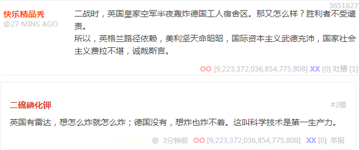
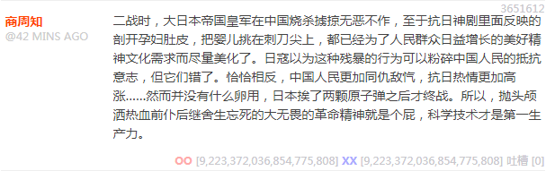
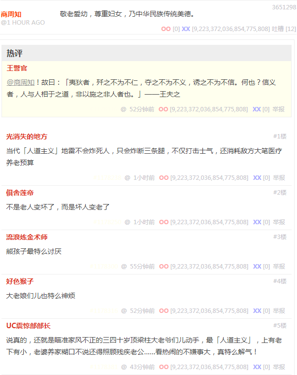
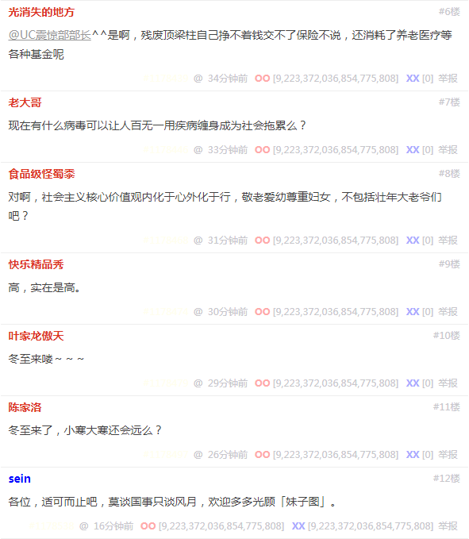
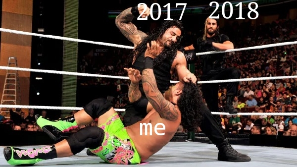
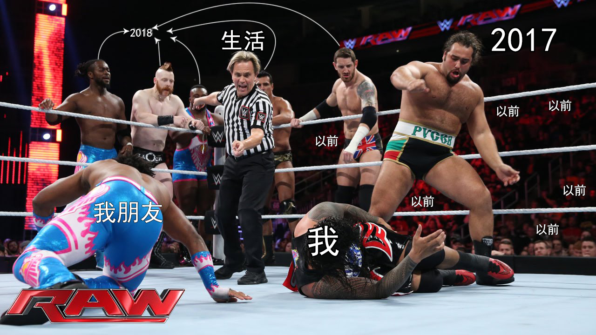
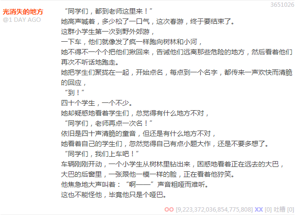
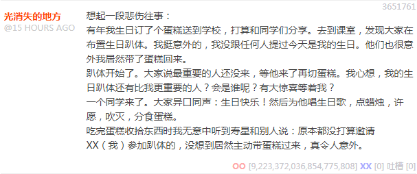

今天「冬至」，字面意思就是「冬天来了」，至于是不是「漫长寒冷」，让我们在实践中检验真理。顺便，今天还是礼拜五，眼看又日落了，「安息日」又来了。这次中东准备好了「血雨腥风」没有？包括但不限于「九省通衢」网站的活跃网友，已经「搬小板凳嗑瓜子前排围观」半个月了也没看见大戏开演，这帮戏子还真有谱耍大牌。
所以，百无聊赖的「九省通衢」热心网友，开始回顾波澜壮阔的大时代，军事爱好者津津乐道的二战大场面，终于达成共识：科学技术是第一生产力。

科学技术是第一生产力（上）

科学技术是第一生产力（下）
前几天还看这位商周知朋友大谈特谈我中华兲朝上国那发达的军事传统当中「吾宁斗智不斗力」「君子动口不动手」的「久经考验的积累几千年阴谋诡计」，啥「所谓做鬼也不放过你，不过是败犬哀嚎，玩死你这么有意思的事情，用不着老天爷出面，人类就可以拿来作为娱乐活动」。
结果呢，最新一条段子似乎转性了，开始弘扬主旋律传播正能量了，奇哉：


敬老爱幼尊重妇女
展开吐槽一看才知道什么意思。既然「奥林匹斯山众神」一边「挑动英雄斗英雄」一边还不许用「绝户计」，当然「上有政策下有对策」喽。若是学习日寇好榜样，那么残暴的三光政策，会引发国际主流价值观激烈抗议，友邦人士莫名惊诧，长此以往国将不国。
所以，「敬老爱幼尊重妇女」「战争让老幼病残孕走开」，还是瞄准精壮大老爷们儿下手吧，堂堂之鼓正正之旗，真刀真枪硬碰硬，费厄泼赖认赌服输……谁也说不出什么来。
只不过，「胜利者不受谴责」「历史由胜利者书写」「窃钩者诛窃国者侯」「胜者为王败者为寇」……有个前提，那就是等赢了以后再说，先甭管怎么赢的。
那么问题就来了：这拨热心网友所代表的政治势力，能赢么？
继续，今天是「考研」头一天，「冬至」已经过去了，在「九省通衢」网站活跃的「民间汉学家」们开始弘扬主旋律传播正能量了，运用我中华兲朝上国那发达的玄学传统，谆谆教导贱种屁民「否极泰来」的道理。比如：

否极泰来（一）

否极泰来（二）
这个风格和其它站点稍微有点不一样，比方说某文学论坛上面的「汉学家兼天体力学家」就会运用包括但不限于球面三角学观点解释「冬至」的唯物主义内涵，然后联系到我中华兲朝上国那发达的玄学传统「否极泰来」当中去。
只不过，多年前当我问「那夏至到了你们说什么呢，泰极否来，上半年走运下半年倒霉？」的时候，对面就开始推销「最后一个通才
」庞加莱的相空间循环论，并联系到一声炮响之后进口的新时代玄学传统「否定之否定螺旋上升」什么的。
扯远了，回到九省通衢话题。昨天应景发了「绝户计」相关素材之后，这一宿先后出现两条「替身」相关素材，还与当年萨达姆卡扎菲和如今金三胖联系到一起，说「师门」高瞻远瞩算无遗策，革命不仅有分工不同，还有高低贵贱之分：

替身（上）

替身（下）
这个节奏稍微有点不一样是吧？前者还是李鬼翻身做李逵的老一套，后者就变成批判我中华兲朝上国那发达的玄学传统当中「生辰八字」并没有什么卵用，顺便给「汉学家」们拆台。然后呢，更早一些时候，「九省通衢」网站首页还有个「失散多年的亲兄弟，念同一所大学的同一个专业」的新闻，这是啥意思？
不管啥意思吧，作为「素材」总是有价值的。如果结合第一条「替身」素材，可以认定还是我中华兲朝上国那发达的文学传统当中「石中玉石破天」「乾隆陈家洛」以及法兰西那发达的文学传统当中「铁面人」的典故，只不过似乎当代「作者编剧导演」把这个俗套剧本照搬到了「学术」领域。
对此，咱立刻「自作多情」的警惕起来了也。理由前面也说过了，无论什么观点，都会被豪门贵种走兽派改编成诈骗屁民钱财的方式，哪怕是纯粹的「数学」，也有拜「邵雍」为祖师爷「梅花易数」相关诈骗团伙。所以，我才反复强调自己的观点，反复提醒人民群众提高警惕。
另一方面，在一帮灌水机追着我喷的过程中，其自身立场经常来回转换，并且灌水机之间措辞有着微妙的不同。有的说我「墙头草随风倒」，有的说我「被几家踢来踢去」，那么到底是谁在「多边下注左右逢源」对我「多方围堵两面夹攻」呢？
在我还是「中国籍汉族人」的时候，灌水机的立场是「吊民伐罪推翻专制独裁的反动体制」，而我变成「反汉贱种中国通」之后，灌水机忽然高举紧跟为了中华民族伟大复兴的中国梦而正确奋斗。看来这个「师门」的剧本考虑得还是比较周到细致的。
转折点就在于我开始阐述「数学」意识形态之后。数学没有任何文化背景，并且使用汉语汉字汉文化表达反而不如「崇洋媚外」更方便。而不仅作为「当代主流数学价值观」的「康托策梅洛主义」与我中华兲朝上国毫无关系，就连整个数学史上直到「当代」以前，刨除所有「兲朝数学工作者」都对数学的发展毫无影响，甚至少了这帮「玄学家」还正面意义大于负面意义。
所以「师门」急了，无论剧本怎么写的，都是为了在兲朝削尖脑袋往上钻。那「替身」长着一身黄皮，为了通过「政审」又不甘心当「反汉贱种中国通」，只好拼命把我往「兲朝传统」当中忽悠喽，包括但不限于汉语汉字汉文化。并且，哪怕是「文科」内容，也不能言必称「希腊罗马」，还必须投靠「诸子百家」。
接下来就是另外一个话题，「反智主义读书无用论智商锁」的愚民政策眼瞅着玩不下去了，党国高音喇叭开始鼓吹「全民阅读」「活到老学到老」了。可是看推荐的内容，除了诗云子曰琴棋书画花鸟鱼虫之外，还是「新时代知名作家」到处推销「有情节的文艺作品」吖，没看到它们意识到「数学只学到初一」是不行的。
只能说路线图已经钦定了：虽然「开卷有益」，但只能读「官方推荐书籍」。而那些「不推荐书籍」当中的内容，或者与「当代主流物理价值观」相同，那么不需要阅读；或者与「当代主流物理价值观」相悖，那么不被允许阅读……这话看着怎么有点眼熟呢？
最后，就是隐约的怀疑。这些自诩「龙的传人」的豪门贵种走兽派，显然至少曾经不是「中国人」，那么作为「远人」「既来之则安之」之后，为啥没有「乡愁」呢？为啥宁可绞尽脑汁想方设法在「中国」赖下去也不想着「Going Home」呢？
很简单，正好可以参考一些网文，尤其是奇幻题材。因为遵守「多多生养遍布大地」原则这么多年，「龙子龙孙」按照斐波那契数列以兔子式增殖膨胀，甚至可比拟培养皿当中琼脂供应充足的微生物。所以，「分封」与「开疆拓土」就成了解决「龙口压力」的方案。不仅「王畿」甚至「甸服」都「龙满为患」，连「侯服」「宾服」都「没有你的位置」了。所以才会看到各种犄角旮旯穷乡僻壤「荒服」被「中央」空降一堆「贵族」过去当「领主」。
结论很明确了：它们已经回不去了。如果不能继续把持兲朝政权保留在「顶层」，一旦沦为「底层」，之前所有「非我族类其心必异」之类「打着红旗反红旗」的迫害贱种屁民的手段，都会滚雪球一般报应到它们自己身上。到了这个时候，「复旦残联下属滴血认亲实验室」可不见得还能替它们做伪证，硬着头皮肿着脸鉴定出「根红苗正炎黄子孙华夏贵胄」来。
现在是北京时间礼拜日早六点半，按中东时间算「塔纳赫版安息日」也该过去了，还没看见「腥风血雨」，这是因为阿拉伯人武德不够充沛还是希伯来人天命昭昭呢？上次「赎罪日战争」可不是这样的，要不是葡萄牙机场依赖，美利坚天命昭昭，再加上苏修猪队友，阿拉伯人攒了很久比较充沛的武德才并没有什么卵用于是继续坚持费拉不堪的传统风俗习惯不动摇。
那么回到兲朝，在从「中国籍汉族人」向「反汉贱种中国通」进化的转折点，有个「路径选择」的「随机过程」。当时咱这数学渣就「严格」的分析了：这帮娱乐至死の逗哔尤其是博导学家们，成天用「说乔全传」放风，还有诡辩唯物主义者挥舞复旦残联下属滴血认亲实验室的鉴定报告帮腔，到底是准备替我把「薛定谔爹」往哪里坍缩呢？
要知道中国人民已经睁眼看世界了，不再坚持「普天之下莫非王土率土之滨莫非王臣」，好歹承认地球上有二百多个国家成千上万的民族，按照人口计算比起「汉族」来都是「少数民族」，还都在抗拒「王化」，宁可讲英语也不讲汉语，宁可朝觐美利坚也不来兲朝上贡，可见各个都是「反汉贱种」……那么这候选就多了去了。
所以，在没有任何先验猜测的情况下，仅从学术角度出发，要分析判断哪一拨贱种更反汉。按照专业习惯，最先关注的就是各个语种的数学著作情况。这时候发现，因为「当代主流数学价值观」使用的公式和符号，都是从左向右从上到下横着写，那么无法与主流正统保持高度一致的，肯定是异端无疑，于是最反动的那一批贱种有了候选。
众所周知，我中华兲朝上国的国家通用语言文字，本来是从上到下从右向左竖着写的，直到三千年未有之大变局，忽然与时俱进，并且由于「方块字」的特征，与国际主流出版价值观接轨无缝过渡还保持光滑性。而同样使用「方块字」的还有其它一小撮民族，境内承认的包括但不限于棒族、藏族、彝族。于是，被时代甩落马下成为历史唯物主义的尘埃的那一部分贱种又得到了进一步的筛选。
还是众所周知，蒙古传统文字，本来是参考参考梵文设计的藏文设计的，但是为了向着当时的国际主流价值观靠拢，居然没有按照宗教信仰与高原土著保持一致，而是改为与当时被征服的费拉不堪的奴隶使用的汉字相同的书写方式，真是膝盖生根头顶绿得发黑贱到骨子里去了，一点主子的自觉都没有。咱老汉活了快四十年，见过贱的，没见过这么贱的。
至于后来的通古斯太君满洲人，因为「蒙古路径依赖」所以创立文字照葫芦画瓢还是这一套。于是，等到汉族「穷则变，变则通」「识大体顾大局懂政治讲规矩守纪律」「审时度势」纷纷当了「俊杰」之后，这才发现自己的傻哔之处。原来我中华兲朝上国那发达的军事传统当中的「兵不厌诈」几乎处处内化于心外化于行，几乎处处留着后手退路。汉族各个都是「君子」，相比之下「言必信行必果硁硁然」的傻哔当然是「小人」喽。
还有呢，按照「五族共和大目标」计算，还差一拨贱种没考虑到，而这拨贱种的情况就稍微复杂点了。本来它们才是「审时度势」的典范，面对当年阿拉伯那充沛的武德，纷纷「识大体顾大局懂政治讲规矩守纪律」皈依了绿教，于是顺理成章的采用了绿色蛆体字，还是从右往左写的草书。
后来嘛，红色兲朝和平崛起，「炎黄路径依赖，华夏天命昭昭」，又要保持民族独立不能一边倒向苏修，于是这「汉语拼音」没有使用基里尔字母，而是借鉴了「英格兰路径依赖，美利坚天命昭昭」使用了拉丁字母。所以，绿色贱种也与时俱进的采用了「新维文」之类混合汉语拼音方案的拼写规范。
再后来，改革春风吹满地，绿色贱种又体会到了中央亲切关怀，恢复了使用绿色蛆体字的传统风俗习惯，至于无法与国际主流出版价值观接轨……重要么？饿死事小失节事大！虽然后来新疆大学搞了一套「拉丁维文」企图与时俱进，但是因为背井离乡睁眼看世界的那拨畏吾儿人率先采用，为了与中央保持高度一致，境内坚决批判这种不肯紧密团结在国家民委和国家宗教事务管理局按照我中华兲朝上国那发达的伦理学传统当中的种姓隔离制度安排给它们的「保持费拉不堪」的革命任务周围的一小撮三股势力。
后面的事情我们都知道了。
总之，因为藏族传统风俗习惯就有与时俱进的可能性，可以奋起直追紧跟汉族脚步，肯定不是最反汉的贱种。而畏吾儿族自发觉醒，也提供了与时俱进的可能性，并且坚持奋起直追紧跟汉族脚步不惜顶风作案妄议中央，那么虽然反汉，但不是贱种。看来只有蒙古族和满族，为了奋起直追，必须继续膝盖生根头顶绿得发黑贱到骨子里去了，在「炎黄路径依赖，华夏天命昭昭」的指导原则下做着「中华民族伟大复兴的中国梦」，很可能灌水机所表达的「中央」安排给我的「革命任务」就是投靠这两拨反汉贱种当带路党，二选一。
这时候，咱作为「主观唯心主义者贝叶斯革命战士」的「主观能动性」就开始发挥作用了，可重复可证伪可见非常之科学的严肃的思想实验「薛定谔爹」佯谬，就是判断诡辩唯物主义的解的存在性唯一性稳定性，质疑中央路线伟大性光荣性正确性的成果之一。这个问题直到现在都没有看到灌水机正面回答，除了「傻哔绿人董存瑞发动自杀式恐怖袭击，反政府武装传播极端思想」「傻哔绿人邓世昌裹胁全舰官兵发动自杀式恐怖袭击未果沦为笑柄，极端组织已渗透我军高层」之类对于来自中东的外宾进行明贬暗褒之外。
结合之前提到的组织「选人用人原则」：自己人用长处，其它人用短处。那么可以判断，因为数学是专业计算机是曾经的职业，所以「组织」安排给我的「革命任务」一定是「落后于时代」的「文科」「传统风俗习惯」当中去，越是能「废掉」眼中钉肉中刺的岗位，可能性就越大。
那么，「政治和意识形态」两个领域的冲突就凑齐了。关于意识形态的话题已经说过了，远在组织分配「反汉贱种中国通」的革命任务之前，我为了「捍卫信仰」就已经和「当代主流物理价值观」发生激烈冲突了。而关于政治的话题，自打十八个大以来逐步激烈起来，忍了几年终于看到「组织」图穷匕见，把脸一抹显出本相，露出了「自称代表国家和民族，以工人阶级为基本盘，走有德意志特色社会主义道路，机关刊物名为《人民啥报》的法西斯」立场。
所以，让我这数学渣高举康托策梅洛主义的伟大旗帜，沿着希帕索斯开辟的革命方向，为了轰轰烈烈的反法西斯战争获得最终胜利的光荣目标，而正确奋斗！！！